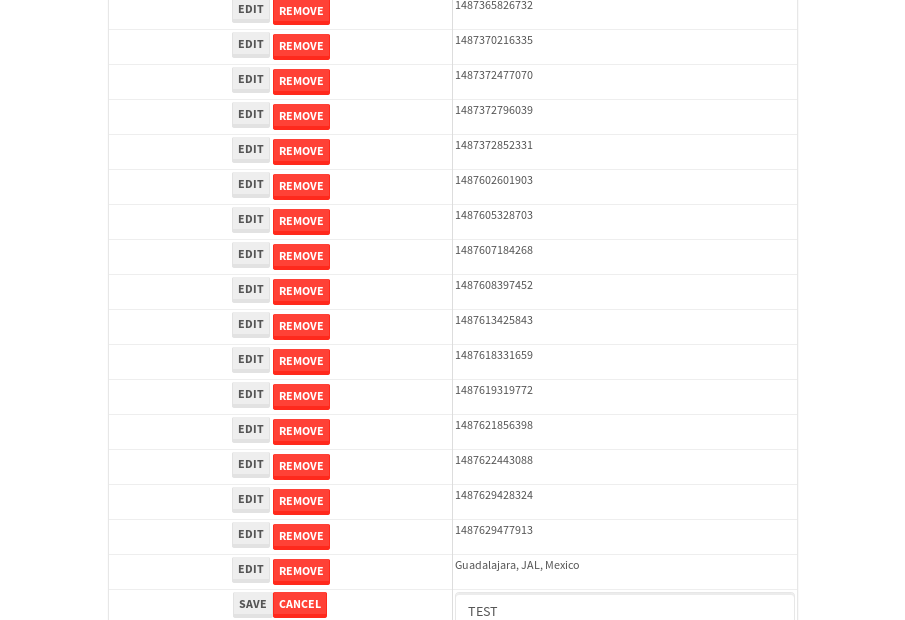

tbColumn.Grid Sorting - 24.386sTests: 5Skipped: 0Failures: 0 should sort data in ascending order then on descending order when sorting by Order Id column - 4.884sTests passed: 100.00%should order data in ascending order when click-sorting an unsorted text column - 4.497sTests passed: 100.00%should order data in descending order when click-sorting an ascending-sorted text column - 5.105sTests passed: 100.00%should order data in ascending order when click-sorting an unsorted date column - 4.824sTests passed: 100.00%should order data in descending order when click-sorting twice an unsorted date column - 5.076sTests passed: 100.00%
tbSingleForm.Form validations - 1.972sTests: 2Skipped: 0Failures: 0 should have an empty required field - 1.042sTests passed: 100.00%should not be able to click on save - 0.93sTests passed: 100.00%
Tubular Filters.tbColumnFilter - 105.973sTests: 12Skipped: 0Failures: 0 should cancel filtering when clicking outside filter-popover - 8.672sTests passed: 100.00%should disable Value text-input for "None" filter - 6.674sTests passed: 100.00%should disable apply button for "None" filter - 6.447sTests passed: 100.00%should decorate popover button when showing data is being filtered for its column - 11.943sTests passed: 100.00%should correctly filter data for the "Equals" filtering option - 8.188sTests passed: 100.00%should correctly filter data for the "Not Equals" filtering option - 8.386sTests passed: 100.00%should correctly filter data for the "Contains" filtering option - 8.463sTests passed: 100.00%should correctly filter data for the "Not Contains" filtering option - 8.43sTests passed: 100.00%should correctly filter data for the "Starts With" filtering option - 6.904sTests passed: 100.00%should correctly filter data for the "Not Starts With" filtering option - 6.836sTests passed: 100.00%should correctly filter data for the "Ends With" filtering option - 6.848sTests passed: 100.00%should correctly filter data for the "Not Ends With" filtering option - 6.98sTests passed: 100.00%
Tubular Filters.tbColumnDateTimeFilter - 133.081sTests: 12Skipped: 0Failures: 0 should cancel filtering when clicking outside filter-popover - 7.067sTests passed: 100.00%should disable Value text-input for "None" filter - 6.315sTests passed: 100.00%should disable apply button for "None" filter - 6.437sTests passed: 100.00%should clear filtering when clicking on Clean button - 18.081sTests passed: 100.00%should decorate popover button when showing data is being filtered for its column - 11.518sTests passed: 100.00%should correctly filter data for the "Equals" filtering option - 6.664sTests passed: 100.00%should correctly filter data for the "Not Equals" filtering option - 7.001sTests passed: 100.00%should correctly filter data for the "Between" filtering option - 12.112sTests passed: 100.00%should correctly filter data for the "Greater-or-equal" filtering option - 12.15sTests passed: 100.00%should corretlly filter data for the "Greater" filtering option - 12.03sTests passed: 100.00%should correctly filter data for the "Less-or-equal" filtering option - 11.536sTests passed: 100.00%should correctly filter data for the "Less" filtering option - 11.625sTests passed: 100.00%
Tubular Filters.tbColumnOptionsFilter - 79.535sTests: 3Skipped: 0Failures: 0 should cancel filtering when clicking outside filter-popover - 8.874sTests passed: 100.00%should decorate popover button when showing data is being filtered for its column - 11.745sTests passed: 100.00%should filter column-elements in accordance to the selected filter when selecting a single option - 48.068sTests passed: 100.00%
Tubular Filters.tbTextSearch - 48.036sTests: 5Skipped: 0Failures: 0 min-chars is not set - 0.971sTests passed: 100.00%should filter data in searchable-column customer name to matching inputted text, starting from 3 characters - 6.697sTests passed: 100.00%should filter data in searchable-column shipper city to matching inputted text, starting from 3 characters - 12.005sTests passed: 100.00%should show clear button when there is inputted text only - 6.651sTests passed: 100.00%should clear filtering when clicking clear button - 16.256sTests passed: 100.00%
tbForm related components.tbCheckboxField - 5.894sTests: 2Skipped: 0Failures: 0 should save changes on "SAVE" - 2.61sTests passed: 100.00%should discard changes on "CANCEL" - 1.684sTests passed: 100.00%
tbForm related components.tbDropDownEditor - 10.401sTests: 5Skipped: 0Failures: 0 should set initial input value to the value of "value" attribute when defined - 1.716sTests passed: 100.00%should show the component name value in a label field when "showLabel" attribute is true - 1.593sTests passed: 100.00%should show a help field equal to this attribute, is present - 1.567sTests passed: 100.00%should submit modifications to item/server when clicking form "Save" - 2.762sTests passed: 100.00%should NOT submit modifications to item/server when clicking form "Cancel" - 2.163sTests passed: 100.00%
tbForm related components.tbTextArea - 14.981sTests: 7Skipped: 0Failures: 0 should set initial input value to the value of "value" attribute when defined - 1.582sTests passed: 100.00%should be invalidated when the number of chars is not in the range of "min" and "max" attributes - 1.955sTests passed: 100.00%should show the component name value in a label field when "showLabel" attribute is true - 1.961sTests passed: 100.00%should show a help field equal to this attribute, is present - 1.879sTests passed: 100.00%should require the field when the attribute "required" is true - 1.807sTests passed: 100.00%should submit modifications to item/server when clicking form "Save" - 2.596sTests passed: 100.00%should NOT submit modifications to item/server when clicking form "Cancel" - 2.514sTests passed: 100.00%
tbForm related components.tbDateEditor - 13.879sTests: 6Skipped: 0Failures: 2 should set initial date value to the value of "value" attribute when defined - 1.812sExpected false to be true.✗Tests passed: 0.00%should be invalidated when the date is not in the range of "min" and "max" attributes - 2.319sTests passed: 100.00%should show the component name value in a label field when "showLabel" attribute is true - 1.753sTests passed: 100.00%should show a help field equal to this attribute, is present - 2.156sTests passed: 100.00%should submit modifications to item/server when clicking form "Save" - 2.351sTests passed: 100.00%should NOT submit modifications to item/server when clicking form "Cancel" - 2.051sExpected false to be true.✗Tests passed: 0.00%
tbForm related components.tbTypeaheadEditor - 15.006sTests: 7Skipped: 0Failures: 0 should show an options list when there is an API-info/component entered-data - 1.996sTests passed: 100.00%should select the option clicked - 2.054sTests passed: 100.00%should show a "delete" button when an option/match is selected, and delete the option if button is clicked - 2.091sTests passed: 100.00%should show a label value equal to the component name when "showLabel" attribue is true - 1.452sTests passed: 100.00%should require a value when "require" attribute is true - 1.912sTests passed: 100.00%should submit modifications to item/server when clicking form "Save" - 3.128sTests passed: 100.00%should NOT submit modifications to item/server when clicking form "Cancel" - 1.857sTests passed: 100.00%
tbForm related components.tbSimpleEditor - 17.311sTests: 9Skipped: 0Failures: 0 should set initial input value to the value of "value" attribute when defined - 1.475sTests passed: 100.00%should be invalidated when the number of chars is not in the range of "min" and "max" attributes - 2.255sTests passed: 100.00%should show the component name value in a label field when "showLabel" attribute is true - 1.501sTests passed: 100.00%should set input placeholder to the value of "placeholder" attribute - 1.71sTests passed: 100.00%should validate the control using the "regex" attribute, if present - 1.594sTests passed: 100.00%should show a help field equal to this attribute, is present - 1.968sTests passed: 100.00%should require the field when the attribute "required" is true - 1.903sTests passed: 100.00%should submit modifications to item/server when clicking form "Save" - 2.629sTests passed: 100.00%should NOT submit modifications to item/server when clicking form "Cancel" - 1.774sTests passed: 100.00%
tbForm related components.tbNumericEditor - 16.001sTests: 7Skipped: 0Failures: 0 should set initial component value to the value of "value" attribute when defined - 1.753sTests passed: 100.00%should be invalidated when the entered number is not in the range of "min" and "max" attributes - 2.05sTests passed: 100.00%should show the component name value in a label field when "showLabel" attribute is true - 1.938sTests passed: 100.00%should show a help field equal to this attribute, is present - 2.172sTests passed: 100.00%should require the field when the attribute "required" is true - 1.921sTests passed: 100.00%should submit modifications to item/server when clicking form "Save" - 2.939sTests passed: 100.00%should NOT submit modifications to item/server when clicking form "Cancel" - 2.5sTests passed: 100.00%
tbForm Connection Error NoModelKey - 2.267sTests: 1Skipped: 0Failures: 0 tbForm connection error functionality - 0.422sTests passed: 100.00%
tbForm Connection Error NoServerUrl - 2.245sTests: 1Skipped: 0Failures: 0 tbForm connection error functionality - 0.413sTests passed: 100.00%
tbGridComponents - 30.747sTests: 6Skipped: 0Failures: 4 should add item with newRow method - 3.799sExpected 'EDIT REMOVE TEST' not to be 'EDIT REMOVE TEST'.✗Tests passed: 50.00%should add item with newRow method and cancel action - 0.804sTests passed: 100.00%should update item with tbSaveButton - 1.546sExpected '' to be 'TEST'.✗Tests passed: 0.00%should NOT update item on cancel Update action - 0.846sFailed: ElementNotVisibleError✗Tests passed: 0.00%should remove item with tbRemoveButton - 21.376sExpected 67 not to be 67, 'should remove the row from the table'.✗Tests passed: 50.00%should NOT remove item on cancel Remove action - 0.961sTests passed: 100.00%
tbGridPager.navigation buttons - 7.587sTests: 1Skipped: 0Failures: 0 should perform no action when clicking on the numbered navigation button corresponding to the current-showing results page - 1.205sTests passed: 100.00%
tbGridPager.navigation buttons.first/non-last results page related functionallity - 3.147sTests: 2Skipped: 0Failures: 0 should disable "first" and "previous" navigation buttons when in first results page - 1.462sTests passed: 100.00%should enable "last" and "next" navigation buttons when in a results page other than last - 1.684sTests passed: 100.00%
tbGridPager.navigation buttons.last/non-first results page related functionallity - 3.235sTests: 2Skipped: 0Failures: 0 should disable "last" and "next" navigation buttons when in last results page - 1.667sTests passed: 100.00%should enable "first" and "previous" navigation buttons when in a results page other than first - 1.567sTests passed: 100.00%
tbGridPager.page navigation - 6.715sTests: 5Skipped: 0Failures: 0 should go to next results page when clicking on next navigation button - 1.423sTests passed: 100.00%should go to previous results page when clicking on previous navigation button - 1.882sTests passed: 100.00%should go to last results page when clicking on last navigation button - 1.242sTests passed: 100.00%should go to first results page when clicking on first navigation button - 1.12sTests passed: 100.00%should go to corresponding results page when clicking on a numbered navigation button - 1.048sTests passed: 100.00%
tbGridPagerInfo - 4.408sTests: 2Skipped: 0Failures: 0 should show text in accordance to numbered of filter rows and current results-page - 1.459sTests passed: 100.00%should show count in footer - 0.614sTests passed: 100.00%
tbHttp - 15.693sTests: 8Skipped: 1Failures: 0 should be authenticated - 2.306sTests passed: 100.00%retrieve data - 2.193sTests passed: 100.00%should not login bad credentials - 2.117sTests passed: 100.00%should have a refresh token - 2.412sTests passed: 100.00%should remove authentication - 2.167sTests passed: 100.00%get method-Is not authenticated - 2.238sTests passed: 100.00%post method-Is not authenticated - 2.26sTests passed: 100.00%should regenerate access token on post - 0s***Skipped***Tests passed: 0%
tbPageSizeSelctor - 8.675sTests: 4Skipped: 0Failures: 0 should filter up to 10 data rows per page when selecting a page size of "10" - 1.924sTests passed: 100.00%should filter up to 20 data rows per page when selecting a page size of "20" - 1.422sTests passed: 100.00%should filter up to 50 data rows per page when selecting a page size of "50" - 2.255sTests passed: 100.00%should filter up to 100 data rows per page when selecting a page size of "100" - 1.671sTests passed: 100.00%
tbRowSelectable - 9.357sTests: 2Skipped: 0Failures: 0 selected rows - 4.71sTests passed: 100.00%unselected rows - 3.12sTests passed: 100.00%
tbSingleForm - 19.962sTests: 8Skipped: 0Failures: 1 should load correct info - 2.329sTests passed: 100.00%should change customer name - 2.224sTests passed: 100.00%should save it - 2.581sFailed: Element is not enabled✗Tests passed: 0.00%should clear the inputs - 2.496sTests passed: 100.00%should update - 2.459sTests passed: 100.00%should reset editor - 2.281sTests passed: 100.00%should not save if not Changes - 3.396sTests passed: 100.00%should not be able to click on save - 2.196sTests passed: 100.00%


{kind=link}